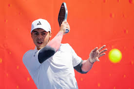

Ben John, Born in March 18, 1999, is a pickleball professional as he is ranked number 1 in the world as of the same by the pro pickleball association. At his childhood years, he was homeschooled as a child and graduated in the university of maryland with a materials science and engineering degree. his oldest brother is also a high ranked pickleballJohns played tennis and table tennis as a child, showing some proficiency in both sports and helping his older brother collin train for the pro tennis circuit. He first played pickleball in 2016 at the age of 17 while vacationing in florida and took fifth place in men pro singles at the US open pickleball championships just a few months later. He began to play in tournaments consistently and earned his first gold medal at the riverbend RV resort pickleball tournament a little less than a year later. That same year, he returned to the US open and took gold in mens pro singles. Shortly thereafter, he won three gold medals at the canadian nationals, bringing him to the forefront of the sport
In 2019, he became the first male professional player to win a triple crown at one of the world's three major pickleball events when he captured it at the tournament
of champions in brigham city, utah. He followed up this achievement by winning the triple crown at the US open in both 2021 and 2022. Ben has accumulated over 80 titles on the PPA tour, 15 of which were triple crowns. Two of his statistics that most exemplify his dominance are his undefeated runs in men's singles and mixed doubles. In 2019, John went on a 108-match winning streak in singles and went undefeated in mixed doubles for 22 consecutive tournaments
Feel free to email me at: ronaldortiz26@students.bboed.org
Page last updated on
April 27, 2026